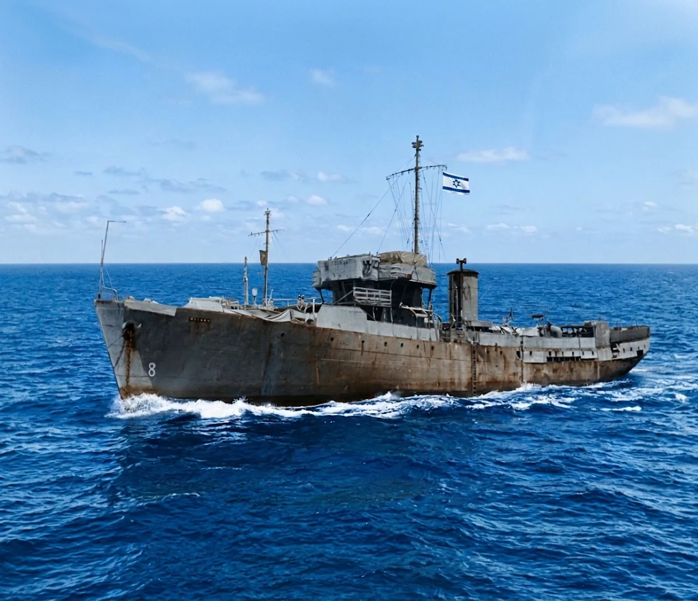
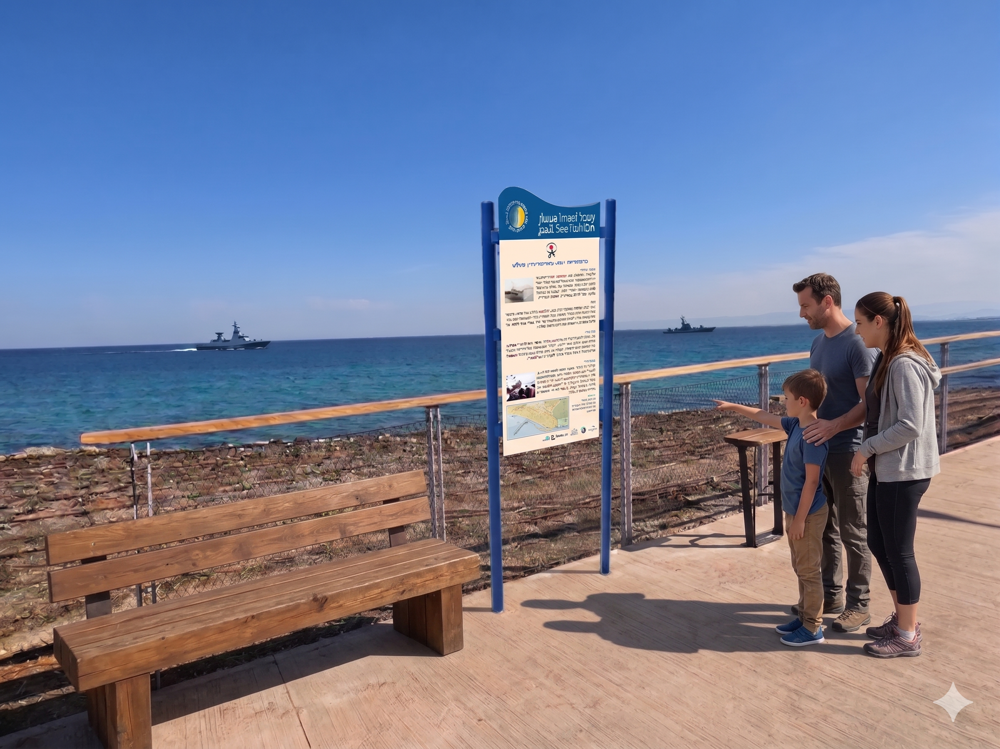

ספינת המעפילים "ההגנה"


שלט ההנצחה האינטראקטיבי המתוכנן להצבה בטיילת העיר חיפה
חברות וחברי משפחת "הגנה" היקרים,
כ-2,678 מעפילים – הורינו וסבינו – הפליגו ב-24 ביולי 1946 מנמל באקאר שביוגוסלביה על סיפונה של אוניית המעפילים "הגנה". הם חצו ימים סוערים, נאבקו בנחישות על הזכות להגיע לחופי המולדת, ועמדו בגבורה עילאית מול המצור והמשחתות הבריטיות בלב ים.
🌊 מיזם ההנצחה: שלט ההנצחה עם ההקדשה ל"הגנה" מתוכנן להיות מוצב בטיילת העיר חיפה, ממול למקום שבו השתלטו הבריטים על הספינה!
🏛️ מורשת ההעפלה בשביל הים – מיזם הנצחה לאומי
ארגון מעפילי קפריסין מוביל מיזם הנצחה לאומי לאורך חופי המדינה, בו אלפי מטיילים, בני נוער ומשפחות נחשפים לסיפור המדהים של ההעפלה הבלתי לגאלית [1, 2].
- 30 תחנות הנצחה אינטראקטיביות: מוקמות עם קודי QR בנקודות בהן נחתו או יורטו הספינות [1, 2].
- "יד זיכרון חיה": מחברת בין הצועדים לבין סיפור הגבורה של כל 142 ספינות ההעפלה ולמעלה מ-110,000 המעפילים [1-3].
- יעד לאומי כולל: היעד הכספי להקמת כלל התחנות לאורך החוף עומד על 320,000 ₪ [1, 2].
הצטרפו למיזם ההנצחה והבטיחו שסיפור גבורת מעפילי "הגנה" ייחקק לתמיד אל מול הים בחיפה!
🎬 עדות מעפילי האונייה
צפו בסרטון העדויות המרגש של מעפילי האונייה "הגנה":
תעודת זהות היסטורית: אוניית המעפילים "הגנה"
| יציאה ומועד | 24 ביולי 1946 | מנמל באקאר שביוגוסלביה |
|---|---|
| מספר מעפילים | כ-2,678 מעפילים – ניצולי שואה ולוחמים ששאפו להקים את ביתם במולדת |
| העימות והגזירה | עימות עיקש מול הצי הבריטי בלב ים, השתלטות בריטית וגרירת האונייה לנמל חיפה |
| מיקום שלט ההנצחה | טיילת העיר חיפה, ממול למקום שבו השתלטו הבריטים על הספינה |